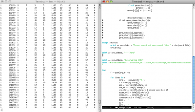
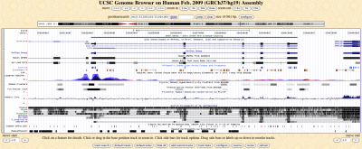
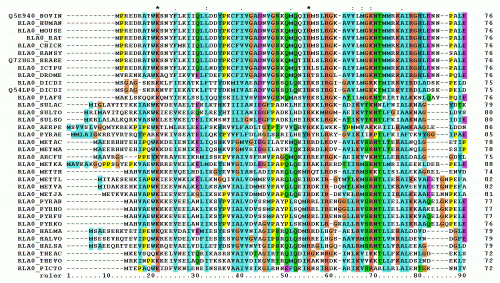

{kind=link}
Citation : Le Site du Zéro
Bonjour Philippe, quel est ton cadre de travail et quelles sont tes responsabilités ?
Philippe Julien - Je suis doctorant en bio-informatique au sein d'un groupe de recherche de l'Université de Lausanne en Suisse.
Je travaille donc dans un bureau entouré d'autres bio-informaticiens mais aussi de biologistes. Je suis amené à échanger très souvent avec ces derniers, afin de bien comprendre les données expérimentales que l'on analyse.
En tant que doctorant, mon travail est de mener à bien un projet de recherche que j'ai défini avec mon directeur de thèse. À la fin de mon doctorat, je serai amené à présenter mes travaux ; mais je dois aussi publier mes résultats dans des revues spécialisées afin de faire connaître mon travail à d'autres chercheurs, tout comme pour le valider. Il y a aussi un travail d'enseignement qui consiste à préparer et donner des travaux pratiques à des étudiants en licence ou master. Le nombre d'heures requis dépend de l'université ou de la faculté. Ce travail d'enseignement peut aussi se manifester par l'encadrement d'étudiants de master effectuant leur travail de mémoire au sein du laboratoire, généralement sous la supervision directe d'un étudiant en doctorat ou en post-doctorat.
La vraie vie d'un bio-informaticien, cela passe souvent par l'écriture de programmes personnels et du travail dans un terminal d'un système UNIX.
{kind=link}
Citation : Le Site du Zéro
Qu'est ce que la bio-informatique ?
Philippe Julien - La bio-informatique est à vrai dire un domaine d'activité très large !
De manière générale on peut dire qu'il s'agit d'utiliser des outils informatiques pour répondre à des problématiques biologiques.
Ces questions biologiques peuvent être très variées : cela va de l'analyse du génome humain à la représentation tri-dimensionnelle de protéines en passant par des simulations visant à tester si une molécule (médicament) peut interagir avec une protéine cible.
Dans chacune de ces applications il faut une dose plus ou moins importante d'informatique. On peut imaginer cela comme un curseur sur une ligne dont les extrémités sont l'informatique d'un coté et la biologie de l'autre. Le curseur peut se situer à peu près n'importe où sur cette ligne.
Par exemple, le développement d'une base de données contenant des données biologiques ou d'un logiciel permettant de visualiser des protéines en 3 dimensions demande de fortes compétences techniques en programmation et bien moins en biologie. À l'opposé, l'utilisation de logiciels déjà existant pour par exemple aligner des séquences d'ADN entre différentes espèces ne demandera que peu de connaissances en informatique mais une forte expertise en biologie pour en analyser les résultats. Entre les deux beaucoup de bio-informaticiens comme moi utilisent quotidiennement leurs compétences en programmation, statistiques ou mathématiques pour répondre à des questions biologiques précises, plaçant le curseur plus vers le milieu de cette ligne. À titre d'illustration, le génome humain comporte 3 milliards de nucléotides, les fameux A,T,G et C. Analyser systématiquement une telle quantité d'information est bien évidemment impossible pour un humain mais au final assez facile pour un ordinateur bien programmé. Aussi, les nouvelles générations de séquenceurs d'ADN peuvent générer environ 8 Go de données pré-traitées par jour et par machine. Il semble alors assez évident que la demande en scientifiques capables de comprendre et traiter informatiquement ces données est assez forte.
Aperçu d'un navigateur de génome permettant de découvrir les différentes informations (présence de gènes, conservation entre espèces,...)
associées à certaines régions d'un génome (ici une petite région du chromosome 21 humain qui ne représente que 0.005% du génome total).
Source: UCSC Genome Browser - http://genome.ucsc.edu/
{kind=link}
Citation : Le Site du Zéro
Quels sont les débouchés et les perspectives après un doctorat de bio-informatique ?
Philippe Julien - Le doctorat a logiquement pour finalité de former des chercheurs. Continuer la recherche dans le milieu académique (en faisant d'abord un post-doctorat pour ensuite pouvoir postuler à des postes de professeurs d'université) est donc normalement la voie la plus simple.
Cependant, le faible nombre de places de professeurs ainsi que la précarité du milieu motivent certains doctorants à chercher d'autres suites de carrière. La recherche privée, dans des entreprises pharmaceutiques par exemple, est une solution choisie par un nombre assez conséquent d'étudiants. Elle permet de continuer à faire de la recherche mais avec des moyens mais aussi des finalités différents.
Si la majorité des diplômés se dirigent vers l'une de ces deux voies, d'autres choisissent des carrières toujours orientées sciences mais différentes comme le consulting, le journalisme scientifique, l'expertise scientifique (dans les banques, propriété intellectuelle, entités gouvernementales,...).
Les bio-informaticiens ayant une double compétence en biologie et en informatique, certains se rabattent finalement sur un métier plus orienté informatique comme du développement logiciel.
http://www.youtube.com/v/U_sFflmuH5k
Simulation de "protein docking" dont le but est de tester si les interactions entre une protéine et une molécule (un potentiel médicament par exemple) rempliront les conditions requises (stabilité, spécificité,...) pour de futurs essais expérimentaux.
Citation : Le Site du Zéro
Quel a été ton parcours avant de commencer ton doctorat ?
Philippe Julien - J'ai eu un parcours assez classique. La bio-informatique exige une double compétence en biologie et en informatique. Si l'une ou l'autre peut s'acquérir "sur le tas", de nombreuses formations universitaires concilient désormais les deux.
Dans mon cas j'ai d'abord validé un bac S (option biologie) pour intégrer une licence en biologie. Une fois cette licence obtenue je me suis inscrit dans un master en bio-informatique qui s'adressait essentiellement à des biologistes. On y apprenait donc les bases de la programmation, algorithmique,... tout en continuant une formation avancée en biologie (les enseignements étaient communs avec les autres masters en biologie de l'université). L'apprentissage de l'informatique combinait les notions de base avec des notions spécifiques à la bio-informatique.
Il est aussi à noter que, comme la majorité de mes camarades de promo en master, j'avais déjà une curiosité et un minimum d'expérience en programmation (même si il n'y avait aucun pré-requis demandé).
Visualisation d'un alignement de la séquence d'une même protéine dans différentes espèces. L'alignement est préalablement effectué par des algorithmes spécifiques et permet in fine de savoir quelles parties de la protéine sont conservées entre espèces et lesquelles le sont moins.
{kind=link}
Citation : Le Site du Zéro
Quelles recommandations donnerais-tu aux lycéens et aux étudiants qui souhaitent devenir thésard, particulièrement dans le domaine de la bio-informatique ?
Philippe Julien - Premièrement il faut avoir un goût pour la biologie, la recherche et donc de la curiosité. La thèse est un travail de recherche avec le lot de passion mais aussi de frustration qui peut venir avec. Il est donc préférable d'être sûr d'aimer ce que l'on va y faire. Si l'on ne s'en sent pas capable ou peu motivé d'autres carrières tout aussi intéressantes s'ouvrent à ceux avec un master en poche.
Deuxièmement je dirais qu'il est mieux de ne pas choisir entre biologie et informatique. Les deux sont primordiaux. Au final chacun travaillera sur des projets impliquant soit plus de connaissances en biologie, soit plus de connaissances informatiques. Mais toujours être au niveau sur les deux aspects permet de pouvoir facilement s'adapter à un nouveau projet demandant des compétences légèrement différentes.Un bon étudiant doit, selon moi, savoir montrer ce qu'il sait bien faire, mais aussi qu'il peut apprendre rapidement à faire encore plus de choses grâce à ses connaissances théoriques.
Aussi, il faut toujours viser haut pour être sûr d'avoir de bonnes conditions de travail. Faire un stage de master ou une thèse dans un laboratoire regorgeant de personnes compétentes en biologie et informatique sera d'une grande aide.
Le faire dans un laboratoire dont les membres n'ont aucune notion de bio-informatique mais ont besoin de vous pour une tâche particulière sera souvent un échec par faute d'encadrement correct. Lors du choix d'un stage ou d'un sujet de thèse pensez donc à bien prendre ces points en compte. Il ne faut pas hésiter à se renseigner sur les domaines de compétences des membres du laboratoire, du chef, des personnes qui vous encadreront, de votre environnement de travail…
Dernièrement : la mobilité et l'anglais. La recherche demande souvent quelques sacrifices notamment le fait de se déplacer, il est à peu près impossible de faire toute sa carrière au même endroit. N'hésitez pas à aller faire au moins un stage à l'étranger, l'expérience sera enrichissante et vous permettra souvent de développer vos connaissances en langues. Ne dédaignez pas l'anglais qui est obligatoire au quotidien. Personnellement, même si rien ne m'y prédestinait à la base, j'ai effectué un stage en Allemagne avant de commencer une thèse en Suisse. Et bien qu'évoluant dans un environnement francophone j'utilise l'anglais quotidiennement pour communiquer avec certains collègues ou mon directeur de thèse.
Citation : Le Site du Zéro
Enfin, quels conseils donnerais-tu aux personnes en recherche d’un emploi ?
Philippe Julien - C'est un domaine où je ne suis pas expert mais mes principaux conseils seraient:
Faites marcher vos relations. Il y a une différence entre être pistonné et savoir faire atterrir son CV dans des bonnes mains. N'hésitez pas à contacter vos anciens professeurs ou camarades de promotion pour savoir s'ils connaissent une entreprise ou un laboratoire qui recrute. Ils peuvent aussi se révéler utiles s'ils connaissent quelqu'un qui pourra vous aider ou vous renseigner pour le poste que vous visez.
Personnalisez vos demandes. Pour mes recherches j'avais toujours un CV de base que j'adaptais à chaque candidature. J'y mettais alors en avant mes compétences les plus utiles pour le poste demandé, en en effaçant certaines ou en les reléguant au second plan.
Soyez mobiles (je me répète). Même si cela peut être contraignant, une expérience à l'étranger sera enrichissante sur le plan humain et très appréciée sur votre CV. Si vous ne souhaitez pas vous expatrier trop longtemps vous pouvez toujours solliciter des stages de 6 mois avant de revenir avec plus d'arguments pour votre recherche d'emploi.